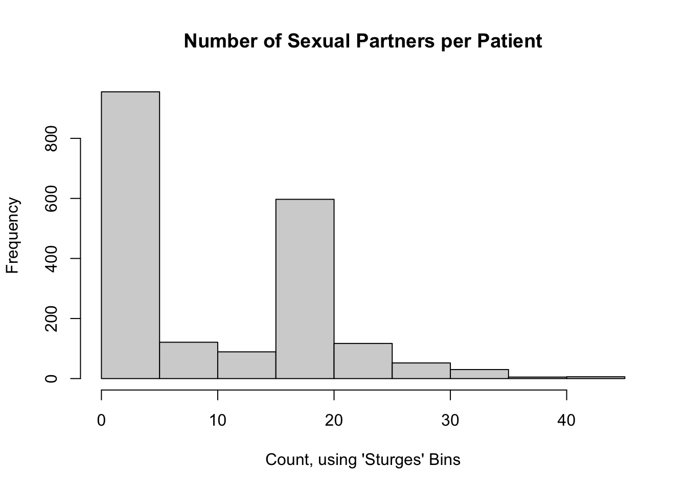
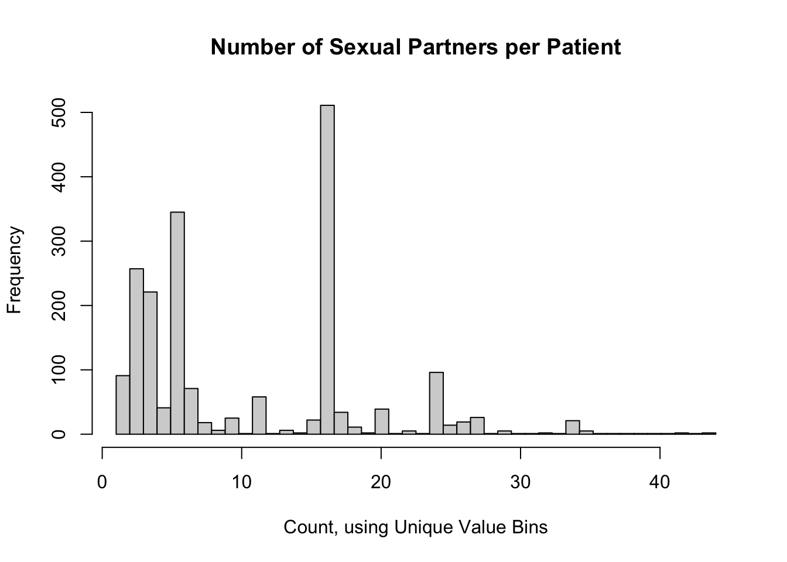
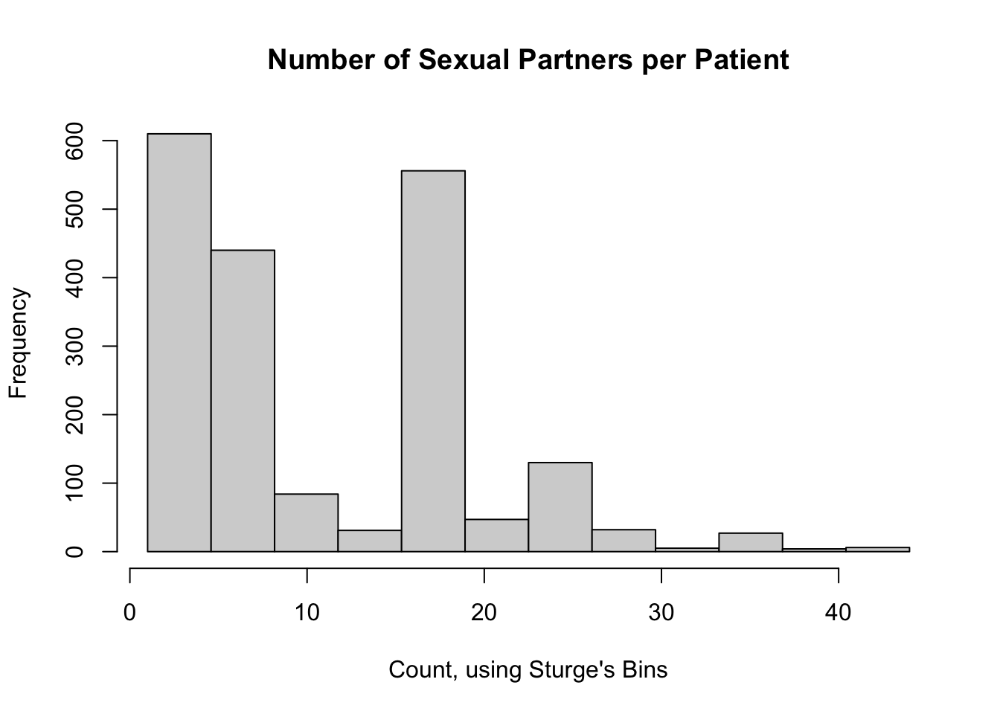
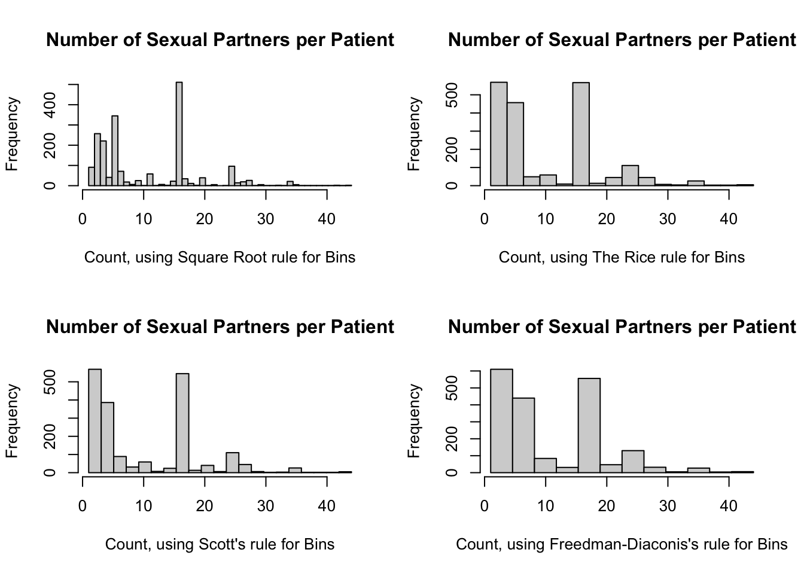

# install.packages("public.ctn0094data")
# install.packages("public.ctn0094extra")
# install.packages("tidyverse")
library(public.ctn0094data)
library(public.ctn0094extra)
library(tidyverse)11 The Chi Squared Goodness-of-Fit Test
11.1 Introduction to the \(\chi^2\) Goodness of Fit (GoF) Test
Non-parametric tests and robust tests often have lower statistical power than their traditional counterparts. These more traditional hypothesis tests make distributional assumptions. For instance, a test may assume that the original observations are approximately normal or that counts follow a Poisson distribution. While we most commonly assess distributional assumptions visually, for instance with a Q-Q plot or histogram, there are some instances where we need to test adherence of data to a specified distribution with a proper statistical hypothesis test. One such test is the \(\chi^2\) Goodness of Fit (GoF) test, published in the textbook Statistical Methods (Snedecor and Cochran, 1989). We draw some of our formulation and examples from this US NIST handbook: https://www.itl.nist.gov/div898/handbook/eda/section3/eda35f.htm.
11.2 Mathematical definition of the \(\chi^2\) Goodness of Fit (GoF) Test
The idea of this test is to “bin” all the observations (think histogram) and then test the counts of the observations in each bin (observed) against the number of counts in the same bins from the target distribution (expected).
Consider a sample of \(n\) observations, \(x_1, x_2, \ldots, x_n\), from an unknown distribution with cumulative distribution function (CDF) \(\mathcal{F}_0\) with support \((-\infty, \infty)\). Let \(\mathcal{F}_A\) denote the CDF distribution to compare against (such as a Normal distribution, Gamma distribution, Negative Binomial distribution, or whatever distribution you think best describes the population data). Partition the \(n\) observations into \(k+1\) bins using \(k\) cut points \(T_1, T_2, \ldots, T_k\), creating the non-intersecting intervals \(\{ {(-\infty, T_1]},\ (T_1, T_2],\ \ldots,\ (T_k, \infty)\}\) which span the support of \(\mathcal{F}_0\). For the sake of notation, let \(T_0 = -\infty\) and \(T_{k+1} = \infty\).
Once we have the data partitions, we then tally the observed count in each bin, \(O_1, O_2, \ldots, O_{k+1}\). We also find the probabilities of being in each bin \((T_{i-1}, T_i],\ i \in 1, 2, \ldots, k+1\) from the target distribution \(\mathcal{F}_A\). That is, calculate \(p_i \equiv \mathcal{F}_A(T_i) - \mathcal{F}_A(T_{i-1})\), noting that \(\sum_{i = 1}^{k+1} p_i = 1\). Multiply the probabilities for each bin, \(p_i\), by the total sample size, \(n\), to generate the expected count for each bin, \(E_1, E_2, \ldots, E_{k+1}\).
Now that we have the observed counts, \(O_i\), and the expected counts, \(E_i\), we calculate the \(\chi^2\) Goodness of Fit Test statistic as \[ \chi^2_{\text{Obs}} \equiv \sum\limits_{i = 1}^{k+1} \frac{(O_i - E_i)^2}{E_i}. \]
The distribution of this test statistic is approximately \(\chi^2\) with \(k^* + (p + 1)\) degrees of freedom, where \(k^*\) is the number of non-empty bins and \(p\) is the number of parameters of \(\mathcal{F}_A\). For example, let’s assume that we are comparing the data against a Beta distribution with two parameters \(\{\alpha,\beta\}\). Further, assume we choose to bin the observed data into deciles so that we have at least one observation in each bin. Thus, we would have \(k^* = 10\) bins and \(p = 2\) parameters. So, we would compare the test statistic \(\chi^2_{\text{Obs}}\) against a \(\chi^2\) distribution with \(k^* + (p + 1) = (10) + (2 + 1) = 13\) degrees of freedom.
11.3 Data source and description
When we treat people who are addicted to licit and/or illicit substances, one potential predictor of recovery is baseline “risky health behaviours”; the Addictions, Drug, and Alcohol Institute hosts a copy of the Risk Behavior Survey questionnaire: https://adai.uw.edu/instruments/pdf/Risk_Behavior_Survey_209.pdf. While exploring the results of this questionnaire among patients in treatment, we might want to know if the total number of sexual partners (column txx_frq in the data set sex) follow a Poisson distribution.
11.4 Cleaning the data to create a model data frame
This data is already relatively clean, other than the missing values. Let’s remove them.
Min. 1st Qu. Median Mean 3rd Qu. Max. NA's
1.0 3.0 6.0 10.4 16.0 44.0 1327 Here is a histogram of the total number of sexual partners for participants in the CTN-0094 data warehouse:
hist(
nPartners_int,
main = "Number of Sexual Partners per Patient",
xlab = "Count, using 'Sturges' Bins"
)

It does not appear that this data follows a Poisson distribution. That said, a journal reviewer may still ask for a \(p\)-value as evidence.
11.5 Assumptions of the \(\chi^2\) Goodness of Fit (GoF) Test
Recall that the \(k^*\) parameter counts only the number of non-empty bins, so we should choose a small enough number of bins to ensure that all bins have at least a couple data points. I don’t actually know for sure what the minimum should be, but I’d say at least 5 per bin, but the traditional \(\chi^2\) Test of Independence assumes at least 10 values per bin. The more bins you use (up to a point), the better the empirical CDF can approximate the shape of the distributional CDF. However, two things work against you: 1) more bins require more samples, and 2) more bins mean that you’re more likely to reject the null hypothesis even when you shouldn’t.
Summary of Assumptions:
- Your samples are independent
- Your sample was taken at random
- Your samples are (or can be represented as) count data
- You have enough samples to have a few per bin (at least 5-10)
11.6 Choosing the Correct Number of Bins
For a test that depends on the number of bins, we would expect there to be some “correct” number. This is a reasonably important question. Unfortunately, as best as these authors are aware, there isn’t one best rule for selecting the correct number of bins. Thankfully, there has been some research done on the optimal number of bins for histograms (which is very similar). We can apply these various “rules” to the \(\chi^2\) GoF test as well.
The standard method to accomplish this is to set breaks = k+1 in the hist() call. However, this number of bins doesn’t always change when you want it to: the help file says that if you give a number of bins for the breaks argument, that “the number is a suggestion only”. In order to “force” the number of bins to be what you want, you have to create a sequence of cut points yourself, using the seq() function. But note that the cut points include the minimum and the maximum of the data (\(T_0\) and \(T_{k+1}\)); so if you want 10 bins, you’ll need a vector of “cuts” with length 11. An example of this code is:
[1] 1.0 5.3 9.6 13.9 18.2 22.5 26.8 31.1 35.4 39.7 44.011.6.1 Bins by Decile
We could divide the observations by into bins at every 10th percentile of the data; this would yield 197.2 participants per bin, on average. It would work pretty well for this data set, but that’s purely a coincidence (but see the odd trivia below the Sturge’s Rule section). This would yield the same default histogram as above.
11.6.2 A Bin for Each Unique Count
A simple rule for discrete data would be a bin for each unique value. In our example, the most number of bins which make sense are all the observed counts (in our case, 44 bins). Let’s rebuild the above histogram with a bin for each unique count value.
hist(
nPartners_int,
breaks = seq(
from = min(nPartners_int),
to = max(nPartners_int),
length.out = length(unique(nPartners_int)) + 1
),
main = "Number of Sexual Partners per Patient",
xlab = "Count, using Unique Value Bins"
)

This retains some of the shape of the data we saw with 10 bins, but it’s very “noisy”. This is probably not a good option to use.
11.6.3 Sturges Breaks
We should recall that in the first histogram, we changed the number of breaks from the default. The default number of histogram breaks in R is an option called "Sturges". Sturge’s Rule states that an optimal number of bins for a histogram (and subsequently, a \(\chi^2\) GoF test) is \(\log_2(n) + 1\), rounded up. For our example, this would be 12 breaks:
# Sample size
n_int <- length(nPartners_int)
# Sturge's rule: number of breaks (round up)
log2(n_int) + 1[1] 11.94544# Histogram
hist(
nPartners_int,
breaks = seq(
from = min(nPartners_int),
to = max(nPartners_int),
length.out = 12 + 1
),
main = "Number of Sexual Partners per Patient",
xlab = "Count, using Sturge's Bins"
)

Aside: why does using decile bins work here? According to Sturge’s rule, for any data set with number of samples between 70 and 2000, 10 bins is reasonably close to the optimal number calculated by Sturge’s rule (for 70 samples, the optimal Sturge’s bins is 8; for 2000, it’s 12). So while it’s purely coincidence for our data set, using decile-based bins will work for many of the data sets that students will encounter in their statistics and methods classes.
11.6.4 Other Rules to Calculate the Breaks
There are a few other rules to calculate the number of bins, all rounded up:
- The Square Root rule: \(\sqrt{n}\)
- The Rice rule: \(\sqrt[3]{2n}\)
- Scott’s rule: \(R / \frac{3.49s}{\sqrt[3]{n}}\), where \(R\) is the range of the data and \(s\) is the sample standard deviation (this rule assumes the data can be approximated by a Normal distribution)
- Freedman-Diaconis’s rule: \(R / \frac{3.49I}{\sqrt[3]{n}}\), where \(R\) is the range of the data and \(I\) is the sample interquartile range (this rule is an extension of Scott’s rule, and therefore also assumes the data can be approximated by a Normal distribution)
Note: from what I’ve found online, there are a few different formulations to these rules, but I’m using those in the link above, as corroborated by page 26 of these notes from Prof. Fawcett at the University of Newcastle: http://www.mas.ncl.ac.uk/~nlf8/teaching/mas1343/notes/chap4-5.pdf
# Range (for Scott's and F-D rules)
range_int <- max(nPartners_int) - min(nPartners_int)
# Square Root rule
sqrt(n_int)[1] 44.40721# The Rice rule
(2 * n_int) ^ (1/3)[1] 15.79958# Scott's rule
range_int / ( 3.49 * sd(nPartners_int) * n_int ^ (-1/3) )[1] 18.55387# Freedman-Diaconis's rule (two versions)
range_int / ( 2 * IQR(nPartners_int) / (n_int ^ (1/3)) )[1] 20.73946range_int / ( 3.49 * IQR(nPartners_int) / (n_int ^ (1/3)) )[1] 11.88508So here are the histograms using these rules:
par(mfrow = c(2, 2))
hist(
nPartners_int,
breaks = seq(
from = min(nPartners_int),
to = max(nPartners_int),
length.out = 45 + 1
),
main = "Number of Sexual Partners per Patient",
xlab = "Count, using Square Root rule for Bins"
)
hist(
nPartners_int,
breaks = seq(
from = min(nPartners_int),
to = max(nPartners_int),
length.out = 16 + 1
),
main = "Number of Sexual Partners per Patient",
xlab = "Count, using The Rice rule for Bins"
)
hist(
nPartners_int,
breaks = seq(
from = min(nPartners_int),
to = max(nPartners_int),
length.out = 21 + 1
),
main = "Number of Sexual Partners per Patient",
xlab = "Count, using Scott's rule for Bins"
)
hist(
nPartners_int,
breaks = seq(
from = min(nPartners_int),
to = max(nPartners_int),
length.out = 12 + 1
),
main = "Number of Sexual Partners per Patient",
xlab = "Count, using Freedman-Diaconis's rule for Bins"
)
par(mfrow = c(1, 1))

11.7 Code to run the \(\chi^2\) Goodness of Fit (GoF) Test
The Sturge and Freedman-Diaconis rules both yielded 12 bins, so we will use this number. Here is a list of the information we need:
- the original observed tally of sexual partners per patient
- a choice for the number of bins (12, in this case), and
- a target distribution (Poisson).
Recall that from our summary statement, the minimum and maximum number of sexual partners were 1 and 44, respectively. The cut() function will return the number of intervals requested which divide these observed values. These would correspond to \(x\)-axis values of the each left and right column of our histogram. Here are our steps to assign each observed tally to its appropriate bin:
bins_df <-
tibble(original = nPartners_int) %>%
# Create 12 bins
mutate(partition = cut(original, breaks = 12)) %>%
# Extract lower and upper limit of the bins; retain the original partition
# column to compare our work
separate(partition, into = c("lower", "upper"), sep = ",", remove = FALSE) %>%
# Remove the leading "(" and trailing "]", then transform to numeric
mutate(
lower = as.numeric(str_sub(lower, start = 2L)),
upper = as.numeric(str_sub(upper, end = -2L))
) %>%
# Replace the smallest and largest limits with the support of the Poisson
# distribution. Note that this will depend on the target distribution you
# choose.
mutate(
lower = case_when(
lower == min(lower) ~ 0,
lower > min(lower) ~ lower
),
upper = case_when(
upper == max(upper) ~ Inf,
upper < max(upper) ~ upper
)
)
bins_df# A tibble: 1,972 × 4
original partition lower upper
<int> <fct> <dbl> <dbl>
1 16 (15.3,18.9] 15.3 18.9
2 6 (4.58,8.17] 4.58 8.17
3 16 (15.3,18.9] 15.3 18.9
4 9 (8.17,11.8] 8.17 11.8
5 16 (15.3,18.9] 15.3 18.9
6 20 (18.9,22.5] 18.9 22.5
7 5 (4.58,8.17] 4.58 8.17
8 3 (0.957,4.58] 0 4.58
9 2 (0.957,4.58] 0 4.58
10 5 (4.58,8.17] 4.58 8.17
# ℹ 1,962 more rowsNow, we can calculate the observed counts, the bin expected probabilities according to the specified Poisson distribution, and the expected counts
# Poisson parameter
estLambda_num <- mean(nPartners_int)
steps_df <-
bins_df %>%
group_by(partition) %>%
summarise(
lower = unique(lower),
upper = unique(upper),
observed = n()
) %>%
# Now calculate the probabilities of a random value from the target Poisson
# distribution falling into these bins
mutate(
p = ppois(q = upper, lambda = estLambda_num) -
ppois(q = lower, lambda = estLambda_num)
) %>%
# And now the expected counts (I'm rounding here just for readability, so I
# also include the non-rounded version for computation)
mutate(expected = p * n_int) %>%
mutate(expected_rd = round(p * n_int, 1)) %>%
# (O - E)^2 / E
mutate(summand = (observed - expected)^2 / expected)
# Do our probabilities sum to 1?
sum(steps_df$p)[1] 0.9999697steps_df# A tibble: 12 × 8
partition lower upper observed p expected expected_rd summand
<fct> <dbl> <dbl> <int> <dbl> <dbl> <dbl> <dbl>
1 (0.957,4.58] 0 4.58 610 2.24e- 2 4.42e+1 44.2 7.24e 3
2 (4.58,8.17] 4.58 8.17 440 2.67e- 1 5.26e+2 526. 1.40e 1
3 (8.17,11.8] 8.17 11.8 84 3.61e- 1 7.12e+2 712. 5.53e 2
4 (11.8,15.3] 11.8 15.3 31 2.86e- 1 5.64e+2 564. 5.03e 2
5 (15.3,18.9] 15.3 18.9 556 5.37e- 2 1.06e+2 106. 1.91e 3
6 (18.9,22.5] 18.9 22.5 47 1.01e- 2 1.98e+1 19.8 3.73e 1
7 (22.5,26.1] 22.5 26.1 130 4.92e- 4 9.70e-1 1 1.72e 4
8 (26.1,29.7] 26.1 29.7 32 1.22e- 5 2.41e-2 0 4.24e 4
9 (29.7,33.2] 29.7 33.2 5 5.55e- 7 1.10e-3 0 2.28e 4
10 (33.2,36.8] 33.2 36.8 27 5.47e- 9 1.08e-5 0 6.76e 7
11 (36.8,40.4] 36.8 40.4 4 1.30e-10 2.57e-7 0 6.22e 7
12 (40.4,44] 40.4 Inf 6 6.11e-13 1.20e-9 0 2.99e10We can now calculate the test statistic and \(p\) value.
# Test statistic
(chiSq_ts <- sum(steps_df$summand))[1] 30026566644# critical value (k* = 12, p = 1)
(chiSq_cv <- qchisq(p = 1 - 0.025, df = 12 + 1 + 1))[1] 26.11895# The test statistic > the critical value, so reject F_A as the distribution
# p-value
1 - pchisq(q = chiSq_ts, df = 12 + 1 + 1)[1] 011.8 Brief interpretation of the output
Shockingly (this is sarcasm), the data that had two distinct peaks and looked nothing like a Poisson distribution can not actually be approximated by a Poisson distribution. Go figure. Regardless, this process can be replicated for your own data as well. We are showing off the \(\chi^2\) GoF version because it works for ANY distribution you can think of.
11.8.1 Brief Aside: Simple Normality Tests
However, this all gets much simpler if you only care about testing for normality (which is usually a dumb thing to do anyway, but I digress). If your data are continuous and “normal-ish”, just use the Kolmogorov-Smirnov test, Shapiro-Wilk test, or the Anderson-Darling test instead. Our data are NOT “normal-ish”, so these results are invalid (but I’m showing you the code anyway).
# Kolmogorov-Smirnov test
ks.test(nPartners_int, "pnorm")Warning in ks.test.default(nPartners_int, "pnorm"): ties should not be present
for the one-sample Kolmogorov-Smirnov test
Asymptotic one-sample Kolmogorov-Smirnov test
data: nPartners_int
D = 0.9311, p-value < 2.2e-16
alternative hypothesis: two-sided# Shapiro-Wilk test
shapiro.test(nPartners_int)
Shapiro-Wilk normality test
data: nPartners_int
W = 0.86427, p-value < 2.2e-16# Anderson-Darling test (requires the nortest:: package)
nortest::ad.test(nPartners_int)
Anderson-Darling normality test
data: nPartners_int
A = 102.73, p-value < 2.2e-16Look at those magical tiny \(p\)-values! So we’ve learned that non-normal data isn’t normal. How surprising (again, sarcasm).
11.9 Wrapping Up
If you need to check if your data are approximately normal, or approximately any other distribution, just plot the data. Use a density, Q-Q plot, or even a histogram. The material in this lesson is to help you when you run into a pesky reviewer / boss / collaborator (who just happens to be addicted to \(p\)-values) and they want to perform a test for distributional assumptions.